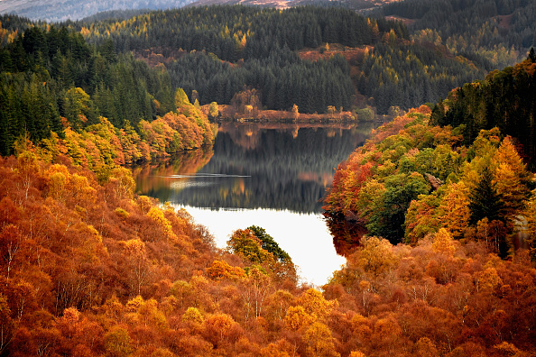

As maravilhosas mudanças do Outono

O outono é conhecido por suas transformações naturais espetaculares. As árvores decíduas preparam-se para o inverno, interrompendo a produção de clorofila, o que revela as cores amarelas, laranjas e vermelhas que estavam mascaradas pelo verde.
Assista à magia do outono:
Esta é a época em que a natureza se prepara para o repouso do inverno, os animais armazenam alimentos e muitos pássaros migram para regiões mais quentes.